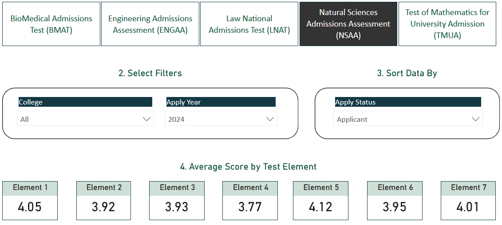
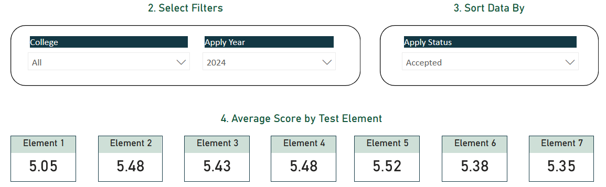

I'm going to limit this discussion to the maths/physics-y admissions assessments (ESAT/PAT/TMUA/MAT/STEP) here. Before we get into the details of each, we'll talk generally preparation strategy.
Hop to any of ESAT | PAT | TMUA | MAT | STEP
Having tutored admissions tests for hundreds of hours, I can safely say that they are absolutely no different whatsoever from any other kind of exam. Meaning:
For most of these, PMT/Official university websites have worked answers. I would recommended giving yourself a day or so between doing a test/question, and looking at the answers. Let your subconcious make progress on the problem, but do look eventually so you can monitor your progress and learn form mistakes.
Generally speaking, STEM admissions tests give candidates loads of medium difficulty questions within a very tight time frame. This varies by exam - I would put ESAT on the easier/faster end of the spectrum, and STEP at the harder/slower end. In all cases, time will be an extreme limiter. Unlike A levels, you will likely neither finish the exam nor score 100%. This is intended as a way of separating the best from the very best! Also, they're based on content that you should have covered in school by this point. Do check this!!
If you can find questions filtered by topic, that can be a nice way to approach learning the exam. In doing 20 TMUA ""if/iff"" questions, you'll learn the pattern and strategy faster than by seeing one every now and again.
Also, broadly speaking, all of these papers are useful to revise for the others - so there's no risk of running out of past papers.


The above is data from the 2024 Natural Science Admissions Assessment for Cambridge. Applicants score on average 3.95, successful applicants are those scoring 5.38.
The admissions test is clearly a big barrier of applications (this and interview are the two big ones) and you should expect to spend a LOT of time preparing. Ideally, a few hours a week in the months leading up to it. I tell my classes: all homework is optional until admissions season is over!

To clarify:
To clarify: